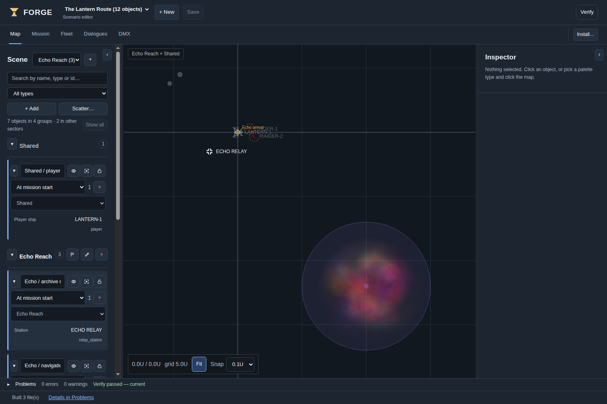
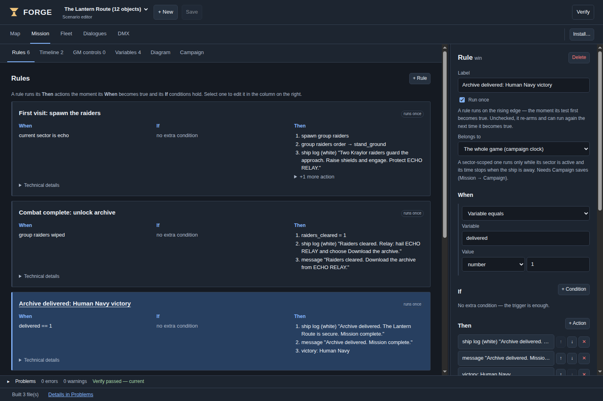
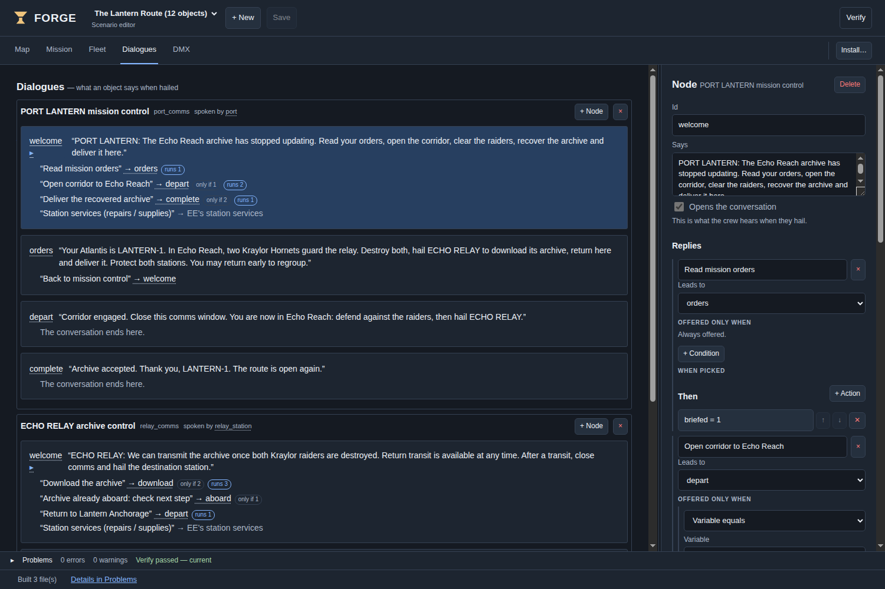
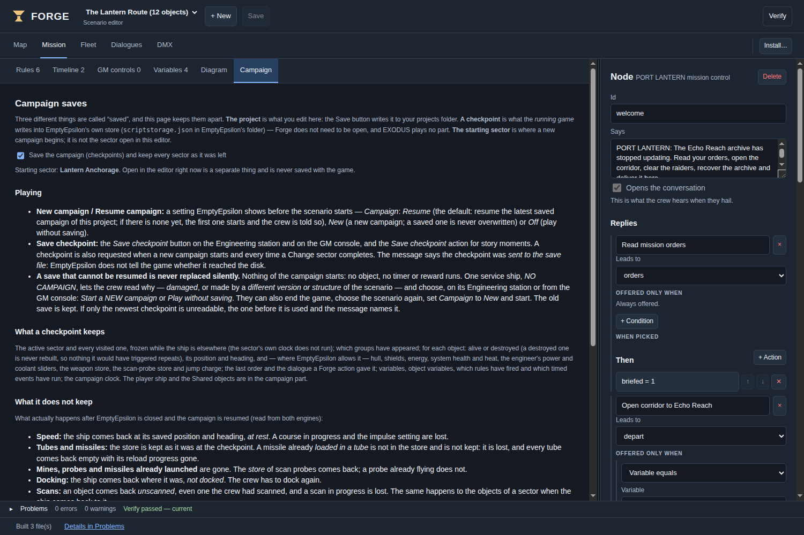

From your first map to a playable vanilla mission
14 October 2026
This guide is for Forge 0.9.0, with its English interface and project format 5. It teaches the authoring workflow using The Lantern Route, the editable mission included with this guide. No programming knowledge is required for the main workflow.
The target engines in this edition are EmptyEpsilon 2024.12.08 and EmptyEpsilon 2026.09.22PR. Use the matching export. A later prerelease needs its own compatibility check.
Forge creates scenarios. EmptyEpsilon runs them. You can close Forge before playing. Vanilla exports do not require EXODUS, its bridge, a web browser or an HTTP server. Screenshots in this guide show Forge’s browser edition; the desktop edition adds native file and installation controls.
If you only want to play the example, start with
START-HERE.md in the pack. If you want to create your own
mission, work through chapters 1–8, then verify and export it using
chapter 10.
Open Forge. In the desktop application, open Settings to choose your projects folder, and Installations… to register the folder containing your EmptyEpsilon executable. Scan the installation so Forge can offer its ship templates, factions and assets. This reads the installation; it does not launch a game.
Select the installation you intend to use. A recognised version means Forge matched a known engine reference; it is not a guarantee about every modified resource in that folder. Rescan after changing engine content. If you keep two installations of the same version, select the intended one explicitly.
You do not need to run EXODUS. Leave its optional extension disabled for this guide.
projects/2024/lantern_route/project.json or
projects/2026/lantern_route/project.json from the
pack.Both variants use the id lantern_route. Keep them in
separate workspaces when you want to compare them, or let the import
workflow create a distinct copy. Do not overwrite one with the other by
manually copying folders together.
The project document is the editable source. Back up the whole project folder before experimenting. Generated Lua is an output: editing it does not update Forge, and the next build replaces it.
Choose New, enter a meaningful mission name, and save. A starter includes a group and a player ship. Keep exactly one player ship while learning this workflow. First make a small scenario work; then add more objects and story branches.
Do not confuse the selected installation with a change to the project’s target. The editor does not provide a general in-place project retargeting workflow. Use Export’s target choice for target-specific bundles, or the supplied matching project variant for this example.
| Command | Result | Does it put a scenario in EE? |
|---|---|---|
| Save | Stores the editable project document | No |
| Verify | Generates and checks the scenario; reports problems | No |
| Export… | Writes distributable output for your chosen target(s) | No |
| Install scenario | Previews and copies files to a selected EE installation | Yes, after the install workflow |
| Save rig | Stores the separate DMX lighting document | No scenario save |
| Save checkpoint in EE | Requests a campaign-state write during play | No change to the Forge project |
The main views are Map, Mission, Fleet, Dialogues and DMX. The bottom status area reports operations; the Problems area collects issues and can take you to their source. A successful Verify becomes out of date after you change the project. Verify again before distributing.
Unsaved changes have a marker. When leaving a document, use Save, Don’t save or Cancel deliberately. A DMX rig and a scenario are different documents: saving one does not save the other.
The Scene column lists groups and their objects. + Add opens the palette; choosing a type arms placement. Click on the map to place it. Cancel or press Esc when finished. Scatter… places a seeded field or cluster, useful for asteroids; inspect the preview before committing.
Click a scene row or map object to select it. Ctrl/Command-click scene rows adds or removes objects from the selection. On the map, left drag moves objects or draws a selection rectangle on empty space; right drag pans. The wheel zooms about the cursor. Use the visible selection before pressing Delete.
Esc without a reference-picking operation stays on Map and clears/disarms the current map interaction. During a reference pick started elsewhere, Esc cancels that pick and returns to the originating view.
Use Snap for deliberate placement. Coordinates follow EE: x increases right, y increases down. Map labels use U; 1 U = 1,000 game units. Rotation is not compass heading: an authored rotation of 0 degrees points right/east. Set it explicitly when the starting orientation matters.
Select an object and edit the relevant section: Identity, Position & shape, Behavior, Story, Appearance or More. The available fields depend on the object type.
An id is the project’s reference, such as
relay_station. A callsign is what the crew
recognises, such as ECHO RELAY. They do not need to match.
Rename ids through Forge so references are updated. Repeated callsigns
are allowed; the Scene list shows ids to distinguish them.
Used by lists rules, dialogues and other content that reference the selection. Follow a reference to inspect its use, then return to Map. Before deleting, review references and the confirmation. Removing a group also removes its member objects.
Search and type filters change the Scene list, not the mission. If a selection is hidden by a filter, clear the filter to see it. Collapse Scene or Inspector when you need more map space on a small screen.
Think of a sector as a location, a group as a set of objects that appear together, and an object as one ship, station or hazard. A group is not a folder of nested subgroups.

Choose a sector to edit it without overlapping other locations. All sectors shows everything, so two locations built at the same coordinates overlap. Visibility and lock controls help you edit; they do not destroy objects, delay their appearance in the game or change the active game sector.
A group’s appearance setting is separate: At mission start or When spawned. For the latter, add a Spawn group action. Merely drawing a group in the editor does not schedule it.
With a game start sector chosen, only that sector’s start groups and Shared start groups initially appear. Shared groups are not unloaded during travel. A Change sector action keeps the player ship and relocates it to the arrival marker. A marker is an authoring reference, not a physical beacon in EE.
Current sector is lets a rule check the active game location. It does not itself move the ship. Likewise, the ship’s normal jump drive only changes its position within the current game world; it does not select a Forge sector.
Use Change sector to unload a location. Do not emulate it with Destroy group: genuine destruction can satisfy Group wiped out and trigger rewards or victory. Proper sector unloading is distinguished from a kill.
Enable campaign saves to use frozen sector state. Objects destroyed there stay destroyed, surviving objects restore the supported saved properties, and sector-local progress resumes. A sector does not simulate while you are away.
With campaign persistence disabled, revisited sectors are rebuilt from their initial object definitions rather than retaining a full sector snapshot. Test your rules with that mode if you intend to use it. Do not assume an editor visibility setting chooses either behaviour.
Open Mission. Use Rules for conditions, Timeline for timed events, Variables for progress, Diagram for an overview and the Logic simulation panel for a logic rehearsal. Campaign controls persistence.
A rule reads: When this happens, and these additional conditions are true, do these actions. Actions execute in their listed order.
Rules trigger when their combined condition changes from false to true. With Run once enabled, that rule will not run again. Turning Run once off does not mean “repeat every frame”: the condition must become false and then true again to re-arm.
A group that has never appeared is not considered wiped out. A group unloaded by Change sector is not considered killed. A normal Destroy action really destroys its targets and can satisfy destruction conditions.
A variable remembers a fact: archive = 0 means the
archive is not aboard; archive = 1 means it is. Declare its
initial value in Variables, set it with Set variable,
and test it with Variable equals.
Types matter. Number 1, text "1" and
boolean true are different values. The example consistently
uses numbers 0 and 1. Declare helps create a missing
declaration from use, but review the inferred type and initial
value.
Object variables belong to particular objects; global variables belong to the whole mission. Use a global variable for campaign-wide milestones.
In the example, the port’s delivery reply sets delivered
to 1. Open rule Archive delivered: Human Navy
victory:
delivered →
numeric 1.Victory names the winning faction. Do not award victory merely because the archive was downloaded if the objective also requires returning home.

Add a rule with Object destroyed pointing to the player or protected station. Add a failure message and Victory → Kraylor (the opposing faction in this example). There is no need for a separate invented defeat action: awarding victory to the opposition ends the player’s mission as a loss.
Test each loss condition, not only the win. Avoid competing win and loss conditions that can both become true in the same update; action order should not decide your story accidentally.
A Timeline event runs at its configured time. Belongs to: Global uses campaign time. An event belonging to Echo Reach uses only the time spent in Echo Reach when persistence is enabled; that clock freezes elsewhere.
Adding a Current sector is Echo condition to a global rule does not give it a local clock. Choose the scope explicitly. The example’s reminder belongs to Echo and occurs after 90 active seconds there.
Use Ship log for instructions the crew can reread, and Global message for a brief announcement. Keep the announcement short; EE station banners can clip long text. Banner is not an ordinary crew-visible message in EE; read the action’s warning.
GM buttons are useful for manual scenario control, but make any required GM involvement explicit in the player instructions. The Lantern Route needs none.
Simulation runs the mission logic against a virtual clock and events you supply, such as a destroyed object. It does not fly ships, balance weapons, provide a real comms player or render EE. Read its “not simulated” notes.
Use it to test premature victory, loss rules and timer order. Then play in the real target engine. A successful logic rehearsal is not proof that the enemy can be reached or that the crew can find the right dialogue reply.
Open Dialogues. A dialogue contains nodes (what a character or station says) and replies (what the crew can choose). Select an entry node. Replies can lead to another node, run actions, or hand off to stock services or the GM.

A dialogue that exists but is not attached to an object cannot be discovered by hailing that object. A node with no replies ends that branch; the player closes comms normally.
The example’s Download the archive reply requires
raiders_cleared = 1 and archive = 0. Its
actions set archive = 1, write the next instruction and
request a checkpoint.
A reply whose condition is false is absent, not greyed out. Tell players what they must accomplish in the node text so they do not mistake a missing reply for a broken interface.
After a Change sector reply, explicitly tell the crew to close the old comms window and hail the destination station. The old station is being unloaded; its conversation should not be used as the new station’s menu.
Attaching a custom dialogue replaces the station’s usual service conversation. Add a reply targeting EE’s station services if you want to retain repair, supply and other stock options. Their availability and costs remain governed by EE. Once in the service menu, close comms and hail again to return to your story dialogue.
Original ships come from the selected EE installation and are read-only. Project templates belong to your project. A ship object on Map is an instance that references a template.
Select an original and choose Copy into project to make an editable template. Review the offer to move existing instances to it: copying and reassigning are separate decisions. Duplicating a project template does not automatically move instances.
Fleet sections are Identity, Hull, Movement, Weapons and Interior. Search properties finds a field and opens its section without changing its value. Used by shows the map instances that use the template.
Use firing-arc previews beside weapon settings and the deck plan beside rooms and doors. Numeric fields remain the precise alternative. A 3D stand-in is not proof that the selected EE model is available. Resource status distinguishes Found, Not found, Not checked, Stand-in and Other source. A missing resource name is kept visible rather than silently replaced.
Custom templates and models require launch-time installation in EE and a restart. Let Forge’s install preview explain the extra files and changes. The Lantern Route deliberately uses stock Atlantis, MT52 Hornet and Small Station templates, so its export is only three drop-in Lua files.

Enable saves in Mission → Campaign, and set a starting sector. A saved campaign includes mission variables, supported object properties, destroyed-object records, visited-sector state, and rule/timer progress.
| Campaign setting | Meaning |
|---|---|
| New | Start a fresh campaign beside existing saves |
| Resume | Try the latest campaign for this project; a truly empty history starts a first campaign |
| Off | Play without writing campaign checkpoints |
For the first intentional run of this example, select New explicitly. Resume is the generated default. New does not overwrite an older campaign, but the interface is not a browser for selecting arbitrary older campaigns.
Checkpoint requests occur at campaign start and around sector transitions. You can also add Save checkpoint as an action or press the in-game Engineering/GM checkpoint button. The archive download in this example requests one.
The host engine writes its scriptstorage.json; saves are
not stored in the Forge project or distributed Lua files. All clients
depend on that host’s save. Keep the same scenario version and EE target
when resuming. Structural project changes or a different engine can make
a checkpoint incompatible.
The engine’s storage API cannot confirm a successful physical disk write. A message saying a checkpoint was sent to the save file means a write was requested. It is not a guarantee against permissions errors or disk failure. Close and restart the host to check a real resume.
| State | Resume/revisit expectation |
|---|---|
| Destroyed authored objects | Stay destroyed with persistence enabled |
| Supported surviving-object properties | Restored from the recorded state |
| Global variables and scoped progress | Restored |
| Inactive sector timers | Frozen until that sector becomes active |
| Player velocity after restart | Ship starts at rest |
| Loaded missile tubes after restart | Empty; a loaded round is lost, not refunded to inventory |
| Launched missiles, mines and probes | Not restored |
| Probe inventory | Restored |
| Docking after restart | Ship is undocked |
| Scan knowledge | Reset, including on sector revisit |
| Alert, shields up/down, beam frequency, selected target after restart | Engine defaults; inspect controls before combat |
| Engineering power/coolant requests | Restored through player control requests |
| Objects created outside the authored map | Not part of the persisted object set |
During a sector jump within a running game, the player remains the same ship and keeps tactical controls; restarting reconstructs it. Neither mode is a complete save of everything in EE.
An unusable checkpoint is not silently replaced with a new game. You may see a holding ship named NO CAMPAIGN. Select it and read its log. Engineering offers Start a NEW campaign or Play without saving, depending on what is recoverable; a damaged campaign index can restrict the choice to unsaved play. Alternatively end the game and choose Campaign = New when appropriate.
Two internal slots can recover some interrupted or damaged checkpoints, but both are in the same file. They are not independent backups. Whole-file corruption can appear to the engine as an empty history.
With EE closed, make a dated copy of scriptstorage.json
before updating scenarios or engines. Forge’s distribution includes a
separate optional Save backup tool; read its own
instructions. It validates the JSON copy, not every campaign’s
playability. Restoring that file affects other scenarios’ stored keys
too. Never include your personal save in a community mission ZIP.
The DMX view edits a lighting rig, a separate document that produces
hardware.ini for EE’s hardware integration. Save it using
Save rig. It is not a requirement for normal scenarios
and it is not the campaign save system.
Define fixtures and channels, then effects and mappings to game triggers. Preview before installing and check against the actual fixture’s channel layout. A software preview is not evidence that physical lighting hardware works. The community example contains no rig and does not require a DMX controller.
Stock-template warnings can indicate an absent or wrong installation scan. Register the matching engine and rescan. Do not change a valid ship name just because another engine’s list is showing.
Choose Export…, select vanilla, and select 2024, 2026 or both. Both produces two independent bundles, built against the matching catalogs. Keep the target folders labelled when sharing. Export success does not test the generated mission inside either engine.
For this pack, copy the three .lua files from the
matching play/<year>/scripts/ folder to EE’s
scripts folder. The scenario picker reads
scenario_lantern_route.lua; the other two files must be
alongside it. Do not copy only the scenario entry file.
For projects with custom templates/models, manual copying requires additional launch-time steps. Prefer Install scenario, review its plan, and follow any restart requirement. Check the selected destination and any overwrite/collision notice. Do not change files that belong to someone else’s scenario to make a collision disappear.
A file can be held open by another program. If installation reports HELD OPEN, release the file and retry. The fact that EE is running is not by itself proof that it holds a scenario file locked.
Use verification/TEST-REPORT.md for the evidence
attached to this particular pack. Do not treat test results from another
project or earlier draft as results for your export.
Use an imported copy. Start with these small changes and test after each one.
Exercise 1 — a clearer briefing. Edit the port’s welcome node. Save, Verify, export and hail the station in EE. Confirm the new text appears. This teaches the source-to-game loop.
Exercise 2 — a third raider. Add a stock enemy to
the raiders group. Keep that group’s spawn mode and rule
unchanged. The group-destroyed objective now includes the new member.
Test combat balance; adding an enemy is not merely cosmetic.
Exercise 3 — a flag-controlled destination. Add a
numeric variable access_granted, initially 0. Make a
dialogue reply set it to 1. Add a new Change sector reply that requires
that value. Its text should tell the player why the route is unavailable
before authorisation.
Exercise 4 — a local reminder. Inspect
echo_reminder, which belongs to Echo Reach. Leave before
its local 90-second threshold, spend time at home, then return. Compare
with a global event. A sector filter in Map is not the same thing as
event scope.
Exercise 5 — an alternate ending. On a copy, add a different final objective and a matching winning-faction action. Ensure the old delivery victory cannot fire first. Test both intended success and failure.
Start a new campaign after structural edits. Keep an unmodified copy of the original example for comparison.
| Symptom | Check first |
|---|---|
| Scenario absent from EE’s picker | Correct scripts folder, entry filename and matching export; all three files copied |
| Station shows only stock services | Dialogue assigned to the station object, not merely created in Dialogues |
| Download reply absent | Both raiders truly destroyed; correct station; archive not already aboard |
| Archive downloaded but no victory | Return to PORT LANTERN and explicitly deliver through comms |
| Enemy never appears | Group set to spawn by rule, rule reached, destination sector active |
| Victory happens too early | Ending condition, initial variable type/value, genuine Destroy actions |
| Two maps overlap in Forge | All sectors selected; choose one sector to edit |
| Hidden objects still appear in EE | Editor visibility does not control gameplay |
| Travel changes position but not location | Normal ship jump used; use the authored Change sector interaction |
| Old conversation remains after transit | Close comms and hail the destination station |
| Ship template list wrong or empty | Target/installation selection and scan; rescan after engine changes |
| 3D ship looks generic | Check resource status; a stand-in is not the selected model |
| Verification marked out of date | Re-Verify after edits |
| Resume shows NO CAMPAIGN | Read the holding ship’s log; choose recovery/new/unsaved intentionally |
| Restart loses loaded missiles or scan data | Documented save limits, not a complete EE snapshot |
Authoring: Save document → Verify → Export/Install → play in EE.
Mission logic: event/condition → actions → changed world or variable → later rule.
Travel: select a game start sector → assign groups → place arrival markers → Change sector.
Persistence: enable campaign saves → choose New/Resume/Off in EE → request checkpoints → verify after restart.
For the full example solution and the exact variable sequence, read
WALKTHROUGH.md. For the measured checks and remaining
limits, read verification/TEST-REPORT.md.